CO₂ Dynamics in a Mofette
Measurement, Modeling & DSP Analysis
Research by: Attila Gergely, Alexandru Szakács, Ágnes Gál, Zoltán Neda
Project by: Arthur Andreescu, Lucian Popescu, Apor Szakács
Digital Signal Processing | Covasna, Romania
Tectonic & Volcanic Activity
Geological Setting
- Volcanic Arc: Youngest volcanic chain in Europe, active with post-volcanic degassing.
- Ciomadul Volcano: Youngest regional volcanic center (~30k years ago), retaining deep magma heat.
- Tectonic Junction: Intersection of three micro-plates drives deep crustal faulting.
- CO₂ Origin: Subduction slab detachment in the Vrancea zone feeds superficial mofettes.
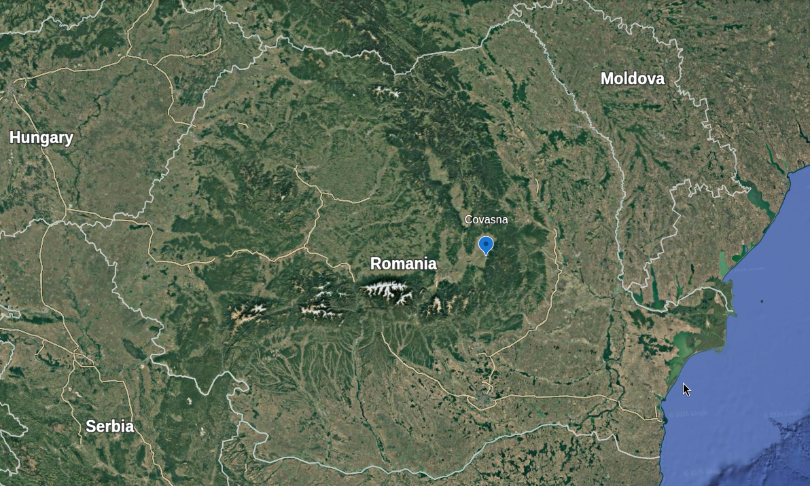
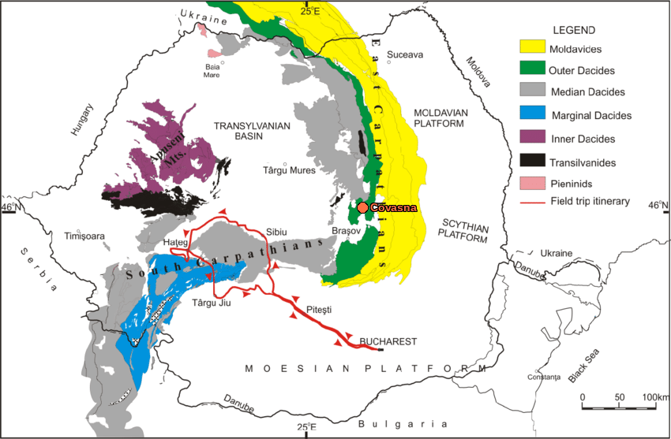
What is a Mofette?
Natural Venting
- Volcanic vent emitting carbon dioxide (CO₂) and other dry gases.
- Common in post-volcanic regions like the Eastern Carpathians (Romania).
- Creates extreme microclimates and heavy gas pooling due to high CO₂ density relative to ambient air.
- Serves as a natural laboratory for studying gas flow dynamics and carbon capture modeling.

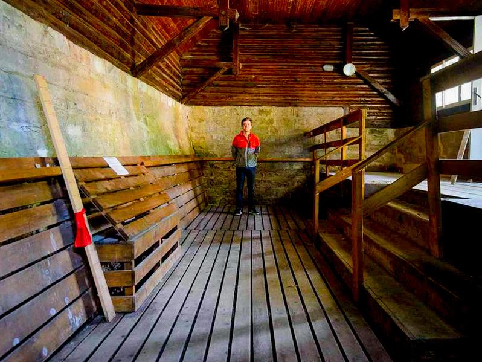
Experimental Campaign & Input Data
Campaign Details
- Location: Covasna, Romania.
- Monitoring Period: Apr 8, 2022 to Nov 7, 2022.
- Data Span: 200 days of active measurements.
- Total Data points: 17.3 Million recordings.
- Resolution: Continuous profiling at ~1 sample/second.
Input Data Files
- Raw ASCII Text: `new_device_column1.txt` (~6 GB raw text data, alternating lines of timestamps and sensor values).
- Processed CSV: `data.csv` (~6 GB standard table with headers).
Sensor Setup & Profiling
Custom Profiling Array
- Main Stack: 20 vertical STC31 sensors spaced 5 cm apart (0 to 95 cm height) for profiling.
- Side Tube: 4 additional STC31 sensors spaced 10 cm apart.
- Meteorology: 2 BMP280 sensors (Barometric Pressure & Temperature) at top & bottom.
- Humidity: 2 DHT11 humidity sensors at top & bottom.
Sensor Configuration
| Sensor Group | Type | Count | Spacing |
|---|---|---|---|
| Main Stack (CO₂) | STC31 | 20 | 5 cm |
| Side Tube (CO₂) | STC31 | 4 | 10 cm |
| Barometric Pressure | BMP280 | 2 | Top / Bottom |
| Relative Humidity | DHT11 | 2 | Top / Bottom |
Exploratory Data Analysis
Raw Time Series Insights
- Vertical Stratification: Lower stack sensors (0-30 cm) stay saturated at ~100% CO₂.
- Active Boundary Zone: Middle sensors (40-60 cm) exhibit massive diurnal oscillations (daily cycles).
- Emission Bursts: Sharp spikes in upper sensors correspond to brief high-intensity vents.
- Seasonal Shift: Summer periods show wider daily fluctuation envelopes compared to spring/autumn.
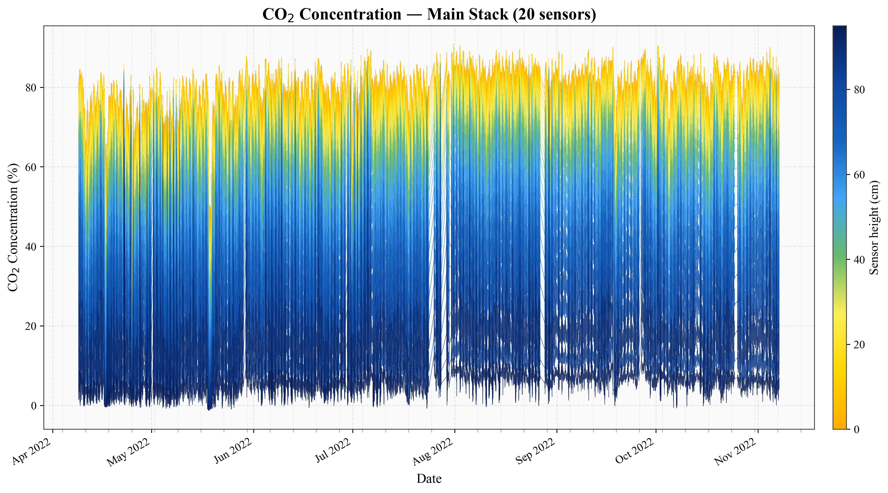
Figure 1: 7-Month Raw CO₂ Profiling (20 Sensors)
Frequency Domain: Welch's PSD
Power Spectral Density
- Analyzed using Welch's Method (7-day window segment, 50% overlap).
- Successfully isolates periodic signals from high-frequency sensor noise.
- Reveals a highly dominant peak at the 24-hour period (diurnal cycle).
- Secondary harmonics are visible at 12-hour and 8-hour intervals, indicating non-sinusoidal distortions.
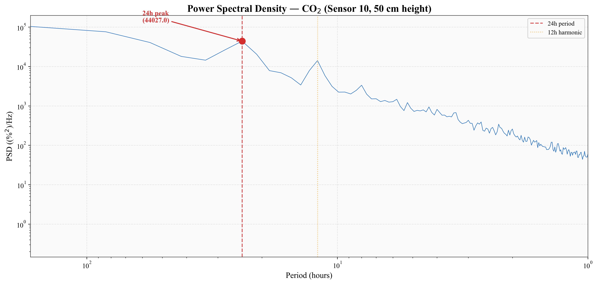
Figure 2: Welch PSD of CO₂ (Sensor 10)
Direct Frequency Spectrum (FFT)
Fourier Transform Analysis
- Calculated using the Fast Fourier Transform (FFT) on detrended data.
- Signals are mapped to uniform 1-minute time grids via linear interpolation to fix sampling jitter.
- Strong magnitude spike at f = 0.0417 cycles/hour (1/24 h⁻¹).
- Proves the physical mechanism driving mofette gas expansion is strictly tied to solar/diurnal cycles.
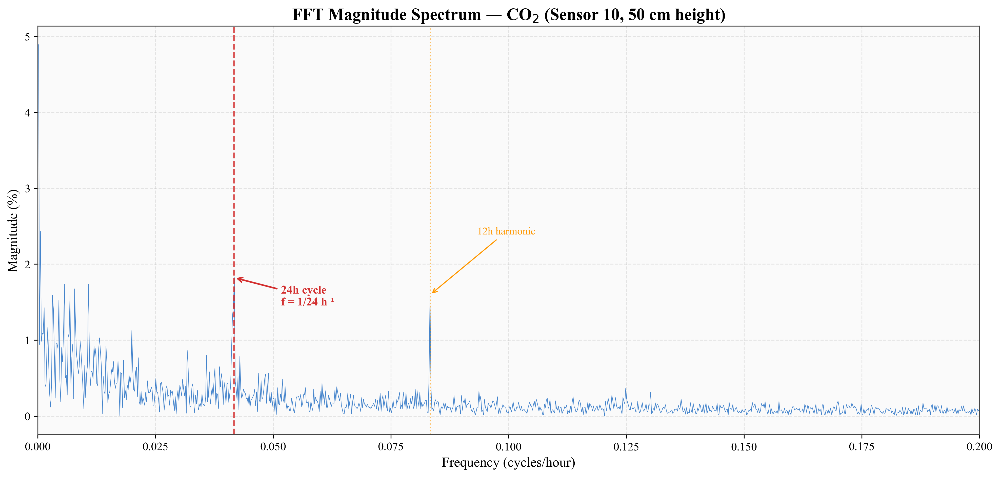
Figure 3: FFT Magnitude Spectrum
Seasonal Trends: Lowpass Filter
Lowpass Butterworth Filter
- Designed a 3rd-order Butterworth Lowpass Filter.
- Cutoff Period: 3 days (cutoff frequency ≈ 3.86 × 10⁻⁶ Hz).
- Implemented using zero-phase filtering (`sosfiltfilt`) to prevent time lag shifts.
- Removes all daily fluctuations, isolating the **long-term seasonal trend** (Spring → Summer → Autumn).
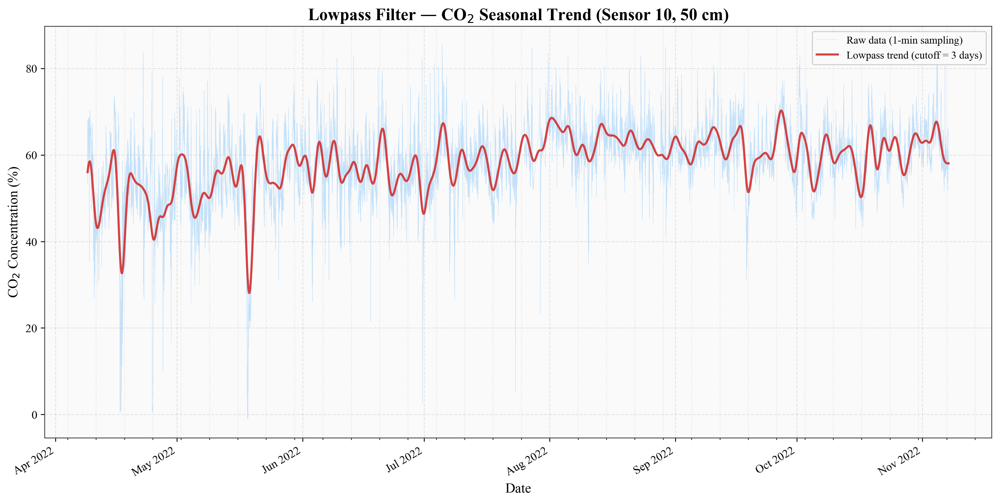
Figure 4: Raw CO₂ vs. 3-Day Lowpass Trend
Isolating the Daily Cycle: Bandpass
Bandpass Butterworth Filter
- Isolates the 24-hour oscillation by rejecting both low-frequency trends and high-frequency noise.
- Passband Range: 18h to 30h periods (cutoff frequencies of 1.54 × 10⁻⁵ Hz to 9.26 × 10⁻⁶ Hz).
- A zoomed 2-week window (Figure 5, bottom) reveals a clean, highly regular, sinusoidal diurnal breathing pattern.
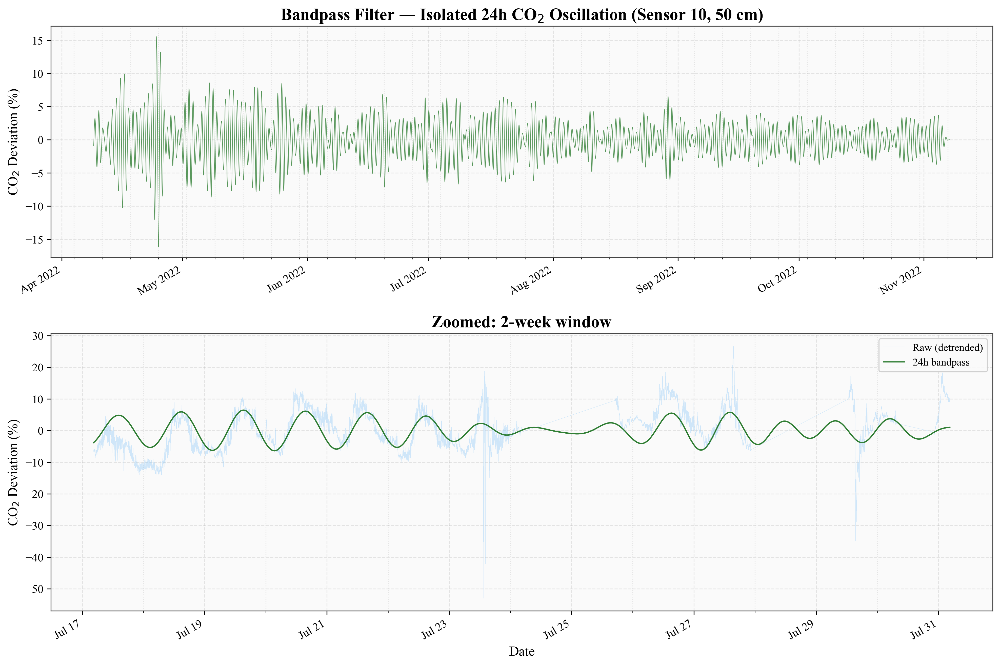
Figure 5: Isolated Diurnal Cycle (Full & Zoomed)
Spectrogram: Time-Frequency View
Spectrogram Insights
- Computed with a 7-day sliding window moving in 1-day steps.
- Plots the strength of frequencies (Y-axis) against the 7-month calendar (X-axis).
- The white dashed line indicates the **24-hour period**.
- Shows that the 24h cycle is **highly active throughout the year**, but intensifies in late summer (Aug-Sep), indicating solar/temperature dependency.
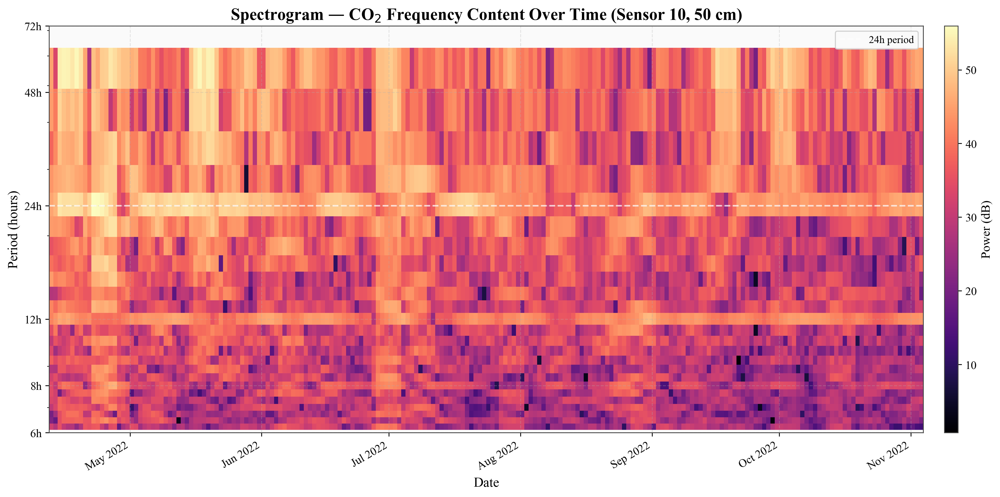
Figure 6: 7-Month Spectrogram (6h to 72h Periods)
Drivers: Pressure & Temperature
Cross-Correlation Analysis
- Barometric Pressure (Figure 7): Strong negative correlation (r = -0.42) at a lag of ~0 hours. Rising air pressure forces gas down into the vent; dropping pressure pulls gas out.
- Ambient Temperature (Figure 8): Positive correlation (r = +0.28) at a lag of ~3 hours. Ambient temperature leads CO₂ gas expansion, indicating thermal drive.
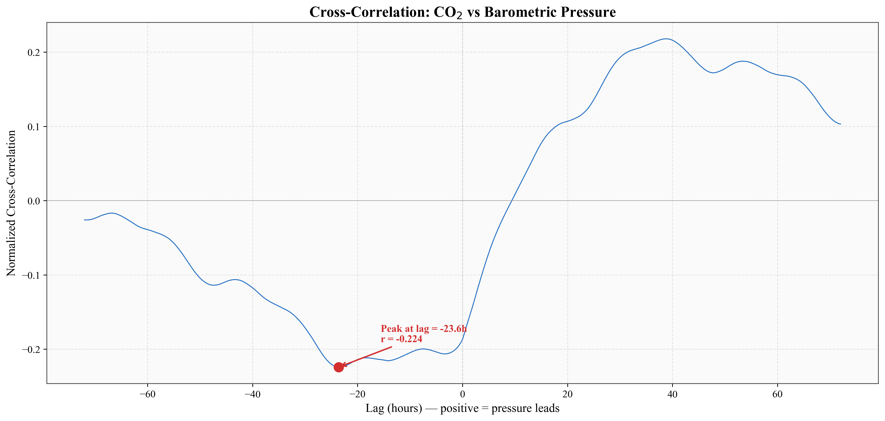
Figure 7: X-Corr: CO₂ vs. Pressure
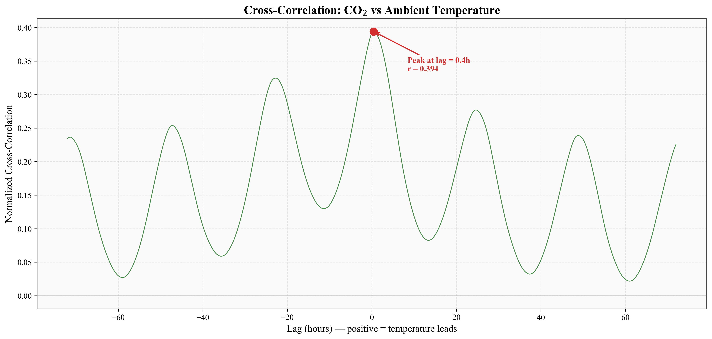
Figure 8: X-Corr: CO₂ vs. Temp
Conclusions & Modeling Value
Key Scientific Findings
- Confirmed **stratified CO₂ gas layering** in the mofette stack.
- Established **barometric pressure** as the primary immediate physical driver of gas rise.
- Identified a **diurnal 24h rhythm** driven by temperature cycles with a **3-hour thermal lag**.
Future Directions
- Predictive Models: Training neural networks (LSTMs) or physical diffusion models using pressure/temperature inputs.
- Safety Monitoring: Building alert systems for dangerous CO₂ levels based on barometric pressure forecasts.
- Volcanic Activity Indicators: Tracking changes in mofette breathing rates to detect deep crustal shifts.
Conclusion
Thank You!
Questions & Discussion
Research: Attila Gergely, Alexandru Szakács, Ágnes Gál, Zoltán Neda
Project: Arthur Andreescu, Lucian Popescu, Apor Szakács